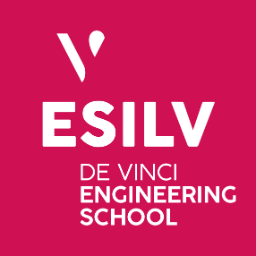

Paris, France
NilsDemougeot
Data & AI engineering student at ESILV Paris. I like taking real data all the way to something people use: a Ligue 1 match predictor, security dashboards for Transdev's cyber team, network coding simulations at MIT, and La Fabrique, our prize-winning startup project.

Class of 2028Data & AI Engineering